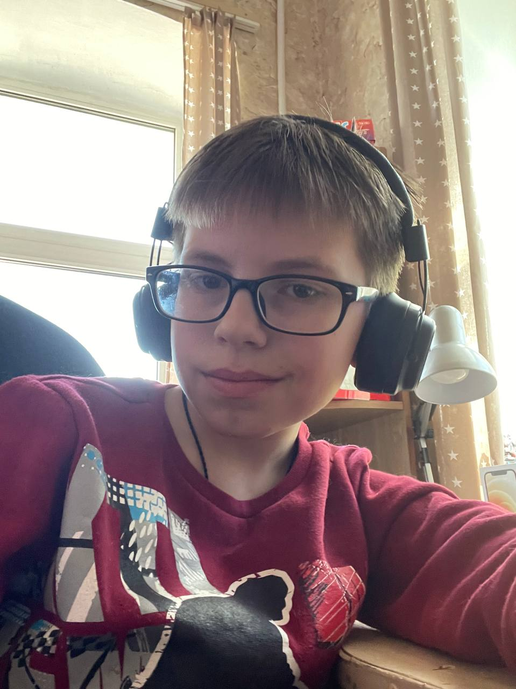

Моё хобби — это сочетание двух прекрасных занятий: слушать музыку и гулять. Это не просто способ провести свободное время, а целый мир, который я открываю для себя каждый день.
Музыка всегда была для меня источником вдохновения и радости. Она помогает мне расслабиться после тяжёлого дня, поднимает настроение и наполняет энергией. Я люблю слушать разные жанры.
Прогулки на свежем воздухе тоже моё любимое занятие. Они помогают мне отвлечься от повседневных забот, насладиться красотой природы и почувствовать связь с окружающим миром.
Сочетание этих двух хобби даёт мне возможность получать удовольствие от жизни и развиваться как личность.